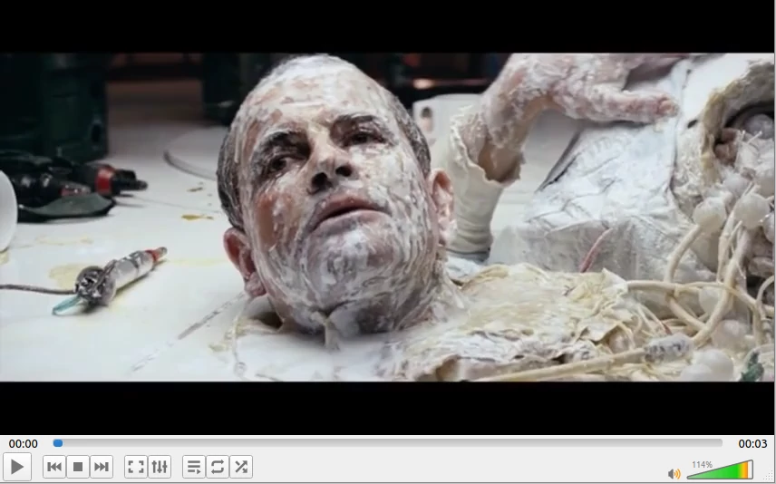
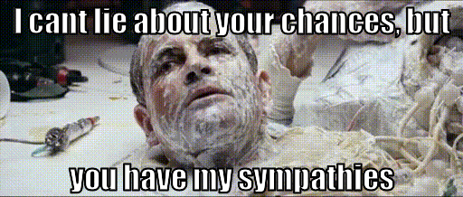
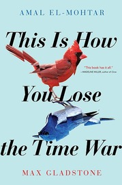
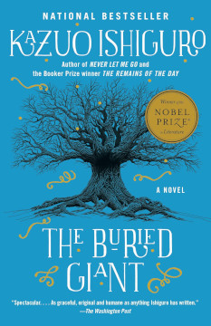
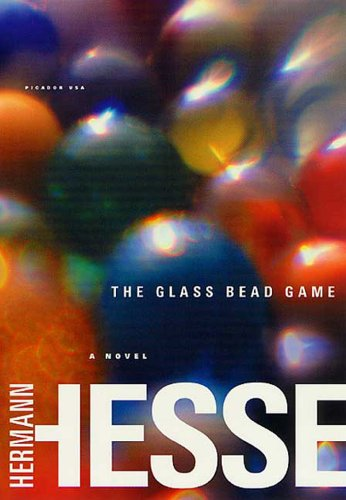

TIL: Creating Animated Meme GIFs on the Command-Line
Got sick of navigating the limitations of various online services to create animated gif memes, finally figured out how to do it manually. Not a universal process, just what worked for my situation. (Which is Ubuntu 21.10, "Impish".)
All of of the ffmpeg invocations could probably be combined into one, but I show the commands as I used them, as I was figuring each step out.
1. Download a video
Starting from a video on YouTube:
To download this locally,
install youtube-dl,
hit the YouTube share button to grab the video's encoded URL,
and:
youtube-dl https://youtu.be/6-gJMs6DwuE -o Ash.mp4
This gives me an 850KB .mp4 video file.
2. Split
I only want the final few seconds. To remove the start of the video, keeping from 6.5 seconds until the end:
ffmpeg -hide_banner -i Ash.mp4 -acodec copy -vcodec libx264 -ss 00:00:06.5 Ash-split.mp4
Args to ffmpeg are position sensitive. Specifying '-ss' (to split the file) before the input ('-i') can't create the split at an accurate location, since it has to guess whereabouts in the file the given timestamp will occur. But putting it after the input (as done here) means it can split accurately on the given timestamp, since the file has been processed by the time this arg gets actioned, so accurate timestamp/frame conversion is known, at the cost of having had to process even the parts of the video that are then discarded.
Vcodec of libx264 is specified because, according to stackoverflow, "scenes in mp4 are broken", whatever that means, and specifying "copy", as most people do, gives me an output with no video, only audio.
This results in a three second, 217KB .mp4 video file. (the following is just an image of it).

3. Crop
To crop out the black bars from the top and bottom:
ffmpeg -hide_banner -i Ash-split.mp4 -vf 'crop=iw:365' Ash-split-crop.mp4
Here, we crop it to the input width "iw", and 365 high. In the absense of any offset ordinates for the crop, ffmpeg defaults to centering them, so this 365 pixels are taken from the (spatial, vertical) middle of the video, which is exactly what we want.
This results in a three second, 220KB .mp4 video file.

4. Resize and convert to gif
ffmpeg -hide_banner -i Ash-split-crop.mp4 -vf 'scale=512:-1' Ash-split-crop-resize.gif
This results in a grainy-but-passable three second 750KB animated .gif:
The file size can be smaller, if you care, most easily by splitting a shorter video clip, reducing the frame rate, or reducing the 'scale' in this step.
Alternately, this could be done using ImageMagik's 'convert', but the result of that was a very large (10MB) file and played very slowly, and I wasn't immediately sure how to fix that.
5. Add text
Using Imagemagik's 'convert':
convert \
Ash-split-crop-resize.gif \
-coalesce \
-font impact -pointsize 36 -fill white -stroke black -strokewidth 2 \
-gravity north -annotate +0+0 'I can''t lie about your chances, but' \
-gravity south -annotate +0+0 'you have my sympathies' \
-layers Optimize \
Ash-split-crop-resize-text.gif
The '-coalesce' option removes all the .gif optimizations, then we apply the text labels, then the '-layers' option re-applies optimizations. Without this dance, the text is all twitchy and messy.
Voilà. Imagine sending it to a co-worker who is taking on a difficult task, like making changes to that thorny section of the codebase that nobody likes:

Subnautica: Below Zero
on Windows, published 2021.
spoilers, obviously. This is a map of an area in the game, revealing many of its secrets.
Subnautica, and its icy sequel, "Below Zero", have perhaps been my favorite games of the last few years. The majority of their run time takes place under the colorful waters of an alien ocean. It's been a joy to sit side-by-size with Zander for tense scuba cave dives, or piloting vehicles through vertiginous underwater cave systems, headlights straining through the murk to reveal wonders. It has inspired cake.
Part of the games take place on land though. I started drawing a map of Below Zero's Glacial Basin region just to keep track of where we'd been. To make sure we visited all the locations, found all the MacGuffins (I'm looking at you, pesky antidote), and experienced all that there was to experience.
But as those goals approached completion, I finished drawing it because it had become a therapeutic experience. Happily exploring away, mesmerised by the scenery, avoiding hostile wildlife, uncovering the ruins of ancient alien artifacts. Reckoning distances by eye, scribbling down what we found, updating and correcting the map as we went. Being lost in the experience. Simply a joy.
Reddit is encouraging me to tackle the tricky Actic Spires area, too. <Rubs hands>...

Starship Troopers

by Robert Heinlein, 1959.
My first time reading this classic old Hugo winner. I'd seen the 1995 movie many years ago, which is clearly a satire, highlighting the fascistic tendencies of the dedicated military discipline required for humanity to survive in a dog-eat-dog galaxy.
But was that Heinlein's original intent? I don't detect that in my reading of it. The text seems, to my eyes, to be a straight-up endorsement and glorification of military discipline, corporal and capital punishment, and withholding citizenship from people who haven't served in the military.
I've seen people argue that, as an expert writer, Heinlein knew precisely what he was doing, and didn't need to draw attention to his critiques of fascism in order for an astute reader to realize that not everything espoused by the novel is necessarily good, or corresponds with the author's viewpoint. We are still discussing the novel 60 years later, and its relationship to fascism, so he has achieved his goal of getting us to think about it. After all, didn't Heinlein write this partway through his drafting of what would become Stranger in a Strange Land, which features hippy sexual freedom, and Troopers itself contains nods to racial and gender equality (albeit these are somewhat ham-fisted.) Hence, say some, Heinlein was would not genuinely have intended to advocate militaristic or fascist views.
I'm not convinced. It seems entirely possible that Heinlein was in favor of sexual freedoms, while in other regards advocating staunch militarism. He wrote Troopers directly in response to the US suspending nuclear weapons testing, which he wished to see resume. According to Wikipedia he stated at the time that he used the novel to clarify his military and political views, such as that the USA was too conciliatory in its dealings with China and the Soviet Union. In the book, the "bugs" - alien enemies, are explicitly referred to as communist, and depicted as mostly mindless drones, for which the only solution is eradication.
So. I don't agree with the author's outlook, and wasn't convinced by the book's interpretation of civics, and passages of moralizing. But it was an interesting, albeit naturally dated, read, to see what successful military SF looked like 60 years ago.
This Is How You Lose the Time War

by Amal El-Mohtar & Max Gladstone, 2019
It's a marvellous literary romp, deploying the tropes and language of science fiction to deliver a scintillating, poetic payload of — dare I say it — credible romance.
spoilers
The combatants in the Time War seek to bring about historical outcomes which predispose those futures which will result in the generation of their own particular civilisation.
In one future, humans have embraced machine-oriented augmentation, uploads, and all that that implies. In the other, transformation is wrought by biological means, accepting humankind's role as a part of a natural ecosystem, bootstrapping the whole to greatness by a ruthless application of evolutionary principles. Each finds the other repulsive, and their existence is mutually exclusive. From our perspective, they appear equally awe-inspiring and terrible to behold.
But, as intriguing as all that is, it's not why we're here. Instead we get the much more personal accounts of two omni-capable antagonists on the front lines. Theirs is a subtle art, weaving probabilities of lasting change through very human interventions - as well as wading knee deep in the dead when occasion demands it, to tip the scales of pivotal battles.
Regarding each other with wariness and respect, from across the gulf of realities, they battle up the threads and down the braids of innumerable possible pasts and futures. Until they begin sending what can only be characterized as letters to each other, albeit often encoded in startlingly — poetically — obscure ways, so as to remain secret from their enemies and their masters.
Around these letters are formed the novel's tight, alternating structure, reminding me of Bank's Use of Weapons. Before you know it, their respect for each other's skills has grown to full-blown giddy all-out love. But where to, from there? Their communications to date are already traitorous - grounds for terminal repercussions. Nowhen in the multiverse are they safe from their respective commanders. Losing the time war would mean they no longer — had never — existed. Winning the time war would mean the same for their now beloved opposite number.
At which point, the novel cleverly folds back on itself - these are consummate masters of time, and subtle but decisive influence, after all - to perform an act of escapology, hinting to us that all their previous acts and letters could be re-construed as having left a trail, ready to be exploited once the moment was right.
It's a long way from my usual preference of hard-as-nails SF, but I loved it nonetheless.
Children of Time

by Adrian Tchaikovsky (2015)
Lots of people love this, and it was jolly enough, but it just isn't for me. A couple of times I toyed with the idea of invoking my new policy of abandoning any book that isn't absolutely knocking my socks off - something I haven't previously been in the habit of.
It's unfair of me to compare one book with another, but partly, I was irked by featuring an alien planet of spiders, that being so reminiscent of Vernor Vinge's 1999 novel A Deepness in the Sky (and he can hardly be the first to play with that.)
To be fair, Tchaikovsky's spider civilization definitely exhibits more thought-out arachnid sensibilities, whereas Vinge's act more like a Dickensian family drama - "Button up warm, childlings!" "Yes, Daddy!". But Vinge was there first, and has such a high profile, being a sequel to a much-loved Hugo winner, that it casts a shadow on anything else following on the same path.
Partly, also, I've been spoiled by hard science fiction from people like Peter Watts - real scientists, who are devastatingly smart, and are not afraid to dazzle their readers with it, even if that makes it a little hard going at times. Something about Children of Time was just too easygoing for me.
The Buried Giant

by Kazuo Ishiguro, 2015
A mythical tale, set in post-Arthurian England. Author Kazuo Ishiguro, Nobel prize winner for literature, is also famous for Klara and the Sun, Never Let Me Go, and The Remains of the Day (yes, that one about butlers.)
Ishiguro moved from Japan to England as a young child, and his insightful observation of English and Western culture and myth benefits from that transplant's perspective - at once deeply at home in England, and also an outsider to it.
spoilers
The tale is populated by ragged peoples, affected by a pervasive amnesia. Elderly couple Axl and Beatrice abruptly decide to leave their village of damp, hobbit-like underground burrows to visit a son they'd forgotten they had.
Simlarly, other characters are inspired by a variety of classical sources, from Beowulf to Arthur's knight and nephew Sir Gawain, now old and prone to quixotic rants - hinting at the subconscious conflict his code of honor has with the dark means by which he and other knights formerly helped Arthur achieve the current uneasy peace between native Britons and invading Saxons, now occupying villages across the land.
The journey is perilous, encountering roaming ogres and deadly pixies, not to mention soldiers of the local lords, and deadly conflicts within the party itself.
But any action is relayed with cool distance. Either through the pervasive mental fog, or using expert fighters' clinical analysis of the minutia of stance or grip, or by foretelling the ebb and flow of a battle by analysing the terrain, then allowing the battle itself to take place off stage, only assumed to have happened, by characters who weren't there.
This muted indirectness is entirely in keeping with the ambiguous, dreamlike style of the book, which is heightened by the sing-song formalism of the characters' medieval speech, and the narrator's occasional surreal hint of relating this tale to contemporaries who live in some other, unidentifiable, historic time.
The journey eventually comes to revolve around the dispatch - or defence - of a dragon that is said to be the source of everyone's forgetfulness, and as this goal approaches, vague fears surface of what might be remembered when the mist lifts. Will Axl and Beatrice's treasured relationship survive the revelations of their pasts? Will the longstanding truce in the land survive the remembering of wartime battles and atrocities? Will Saxon resentment at Arthur's desperate misdeeds be stoked into resumption of the violent war of invasion? This is left unresolved by the novel's end, but as reader, we know that the Saxons did ultimately conquer all of England, displacing the Britons culturally and politically, and probably murdering a good number of them along the way.
Personally, I'm minded to think of ancient England here as being a root of modern Western culture, and the mist as an allegory for the bland ignorance of our own culture's atrocities. The deliberate forgetting, like the mist, clouds all our conciousnesses, making it hard for us to remember who we are. Why we're here. The silent resentment of crushed minorities and genocide survivors forms a pressure, struggling against the placating narrative that everything's OK now. But, contained, the pressure builds.
Truly a buried giant, indeed.
Permanent Record

by Edward Snowden, 2019
I really enjoyed this memoir. The story is familiar, but intriguing to hear in the characteristically articulate words of Snowden himself.
He recounts growing up as a computer nerd in a family dedicated to military service, punctuated by startling scenes such as being caught in the pandemonium outside NSA headquarters as it was evacuated during 9/11, and the subsequent overreach of surveillance capability that triggered.
He describes the interesting parts of his ascent through jobs, and clearance levels, within the intelligence community, and how he came to slowly suspect — and later confirm — that the government was collecting all the communications and transactions, from everyone who touched a phone or computer, in America and across the world. A vast spying mechanism turned upon the populace, beyond the wildest dreams of the Stasi, who only surveilled one third of their population.
At "Constitution Day" in the office, a forlorn desk in the cafeteria hands out copies of the constitution, which his clearance had required that he, and his colleagues, swear an oath to uphold. He quoted the 4th amendment to colleagues:
"The right of the people to be secure in their persons, houses, papers, and effects, against unreasonable searches and seizures, shall not be violated."
The responses were dead-eyed shrugs - yeah, sure, but what can you do? What indeed.
He describes the dangers of a government given too much power to spy on the everyday lives of its citizens, and the crisis of conscience that slowly lead to his decision to let the American people know that they were being spied upon, and his planning of how to go about it. How he slowly accumulated the hundreds of documents needed to reveal the full extent and capabilities of the spying apparatus. The extraction of those documents, hidden on his person on micro SD cards, concealed in places such as in a Rubik's cube he routinely carried through security. The months long process of selecting journalists who could both communicate the material coherently to the public, and vet the public releases to eliminate the risk to our undercover personnel.
His recounts the preparations for flight, tying up his affairs like a man about to die. Emptying bank accounts, leaving cash for his girlfriend to find. Leaving the house tidy and repaired. The necessity of flight, to avoid a show trial, devoid of any meaningful defense. A whistle-blower is not allowed to argue that their disclosures were civilly beneficial. Even now, when Snowden's leaks have caused Congress to change laws regarding surveillance, or caused the courts to strike down types of mass surveillance programs as illegal, or caused both the Attorney General and the President of the United States to admit that the resulting debate over mass surveillance was a crucial one for the public to have. All these claims would be dismissed by the court as not just irrelevant, but inadmissible, leading to a sentence of up to ten years per leaked document.
And finally, flight itself. A tense series of airplanes and delays, meeting the selected journalists in Hong Kong, selected for being sufficiently disjoint from Chinese rule so as not to taint his revelations with the suspicion of having sold out to China, but still sufficiently lawful, and under the auspices of the distant Chinese rule, that that the American government would not snatch him off the street with impunity.
The indulgence of the Hong Kong government fell apart, as the US filed for extradition. He fled bound for Ecuador, but was pulled aside during a 20-hour layover in a Moscow airport, for a conversation with Russian intelligence, during which Snowden insists he will not work with them, he only wants to catch his flight out. They reveal to him that he cannot leave, since the US State department has cancelled his passport. He is stranded in Moscow airport for 40 days, and eventually granted temporary asylum in Russia. Eventually, his girlfriend — who knew nothing about his plans — recovered from the shock of his unannounced departure, moved out to Moscow to be with him, and then a year later, they were married.
Manifold Garden

Windows, 2019
This was always going to turn my head, marrying a marvellous geometric engine to an austere, flat-shaded renderer. Bewildering portals, seamlessly disguised as humble doorways, are the simplest of its tricks. More pervasive, levels are wraparound along all three spatial dimensions, as can be seen by the disorienting arrays of geometry - the current level, infinitely repeated, offset or re-oriented - marching to the vanishing points, dwindling to infinity in all directions.
This is no mere trippy backdrop. Gravity can be trivially flipped to lie along any cardinal axis, and one will routinely step off, into a yawning, infinite abyss, to fall through the entire level, and beyond, through and amongst the infinite constellations of geometry, airsteering all the way, to land, unharmed, anywhere that's exposed to the direction you're falling from. It becomes a form of teleportation, used to get from A to B almost as frequently as simply walking around.
This non-Euclidean wrapping is baked deeply into the visuals, the engine, and the gameplay. But for all that technical mastery, the puzzles themselves aren't as deep and creative and varied as those in the ostensibly similar, but less technically accomplished, Antichamber.
Having said that, there's something entirely appropriate in this. The puzzles end up being as much rituals as a head-scratchers, holy spatial rites one performs to unleash the deeply evocative visuals towards the end of each level - a faceted and angular psychedelic, coupled with unnerving reformulations of reality straight out of Farbrausch's Debris. By the final level, this crescendos in scenes reminiscent of 2001: A Space Odyssey, profound in both the intimacy of my commune with godhood, and in my continued inability to understand what I had achieved. Created a universe, probably? Yeah, probably.
The Glass Bead Game

by Hermann Hesse (1943). Translated from German to English with evident devotion and expertise by Clara Winston & Richard Winston.
This novel is described by some as the culmination of Hesse's career, for which he received a Nobel Prize for Literature. Many reviews on Goodreads cite it as a life-changing novel, or as a singular all-time favorite book.
I must confess with some sadness that I must have entirely missed the point. I have not enjoyed it at all. The number of books I failed to finish in my life is surely less than five, and this very nearly became one of them.
spoilers
The first half describes Knecht's education and career within the rarefied academic atmosphere of some distant future European state's "pedagogical province", wherein (exclusively male) scholars devote their time to mastery of the titular game. This relies upon drawing deep relationships between all fields of human study, such as music and biology.
Knecht is talented and likeable, and rises effortlessly through the ranks, without exhibiting any real volition of his own, other than being naturally predisposed to study, and having an instinct for drawing out the best in people. He is ultimately assigned to the highest office in the land, without encountering any substantive antagonist or difficulty along the way.
The mechanics of the game itself, about which all this ostensibly revolves, is deliberately never explained, other than poetic references to glass beads being used to exquisitely interrelate insights or concepts from multiple fields of study.
This first half of the book bored me to absolute tears. If I had to find a single word to describe Knecht, despite his diligence, it would be "inactive".
At the halfway point through the book, this serenity is interrupted by Knecht making the controversial decision to quit, not just from his exalted post, but from the whole system over which it rules. He leaves the insular academic province entirely, to begin a new life, subject to more real-world constraints. Just at this very moment, as the narrative becomes interesting, this section abruptly ends in a very unexpected manner.
Out of the whole book, this moment resonates with me. Knecht has spent a life devoted to scholarly thought, but after many decades he throws off the expectations of that life to forge his own path. Mere days after that decision, a moment of physical exertion proves to be his sudden undoing.
Does this show that Knecht should have more highly valued the protections from the physical world that his intellectual castle provided? That someone raised in such a cosseted environment was unsuitable to face the rigors of the real world? Or should I instead observe that, despite his ostensible success and satisfaction with life, in waiting so long before daring to strike out on his own, and then find days later that his time was up, Knecht has in some ways wasted his life doing something other than what he really wanted to do?
Neither of these seem particularly compelling to me, nor sufficient for the larger themes that I suspect the book might actually be grappling with.
The second half of the book contains various poems, written by Knecht when he was younger, containing premonitions of his aspirations and his doubts. It ends with three short tales, each describing an alternate life that Knecht might have lived in other times. Apparently early drafts had these tales being literal other lives Knecht was reincarnated into. But in the published book, they are presented without context, and I think it is only by consensus that they are commonly understood to be grouped with the earlier poems as examples of Knecht's writing - his imagination of other lives he might have lived.
I did not understand the relevance of these tales to the larger portion of the book, other than the way they forcefully contrast with it, by immersing Knecht in emotional and painful tales of life embedded within a wider society, rather than abstractly observing its achievements from without. As such, they force him into action, and to me they are more engaging for it.
Wikipedia informs me that each of the four tales of Knecht's life focuses on a different basic aspect of analytical psychology: thinking (Magister Ludi), sensation (The Rainmaker), intuition (Indian life) and feeling (The Father Confessor). Similarly, several of the book's characters who had influence on Knecht are thinly-veiled references to real world people, some famous such as Friedrich Nietzsche, others being acquaintances of the author.
All of which seems reasonable, but doesn't really help me understand what I just read. Perhaps each tale of Knecht, in focussing on one human trait, is lacking because it undervalues the other three. Perhaps. ¯\(ツ)/¯
Rating: 10/10 if you are not me. 2/10 if you are me.